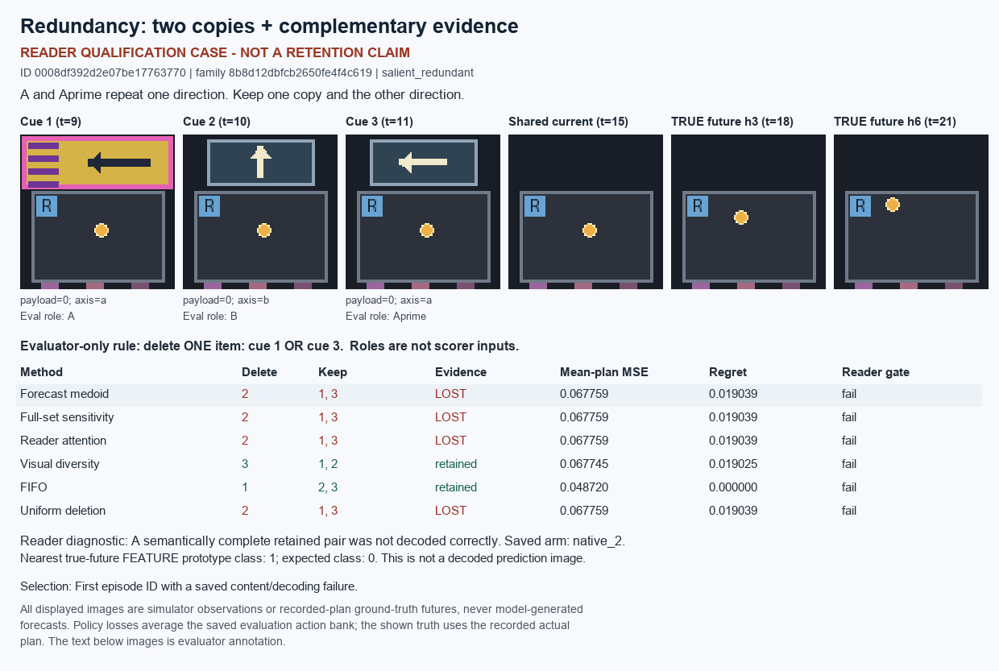
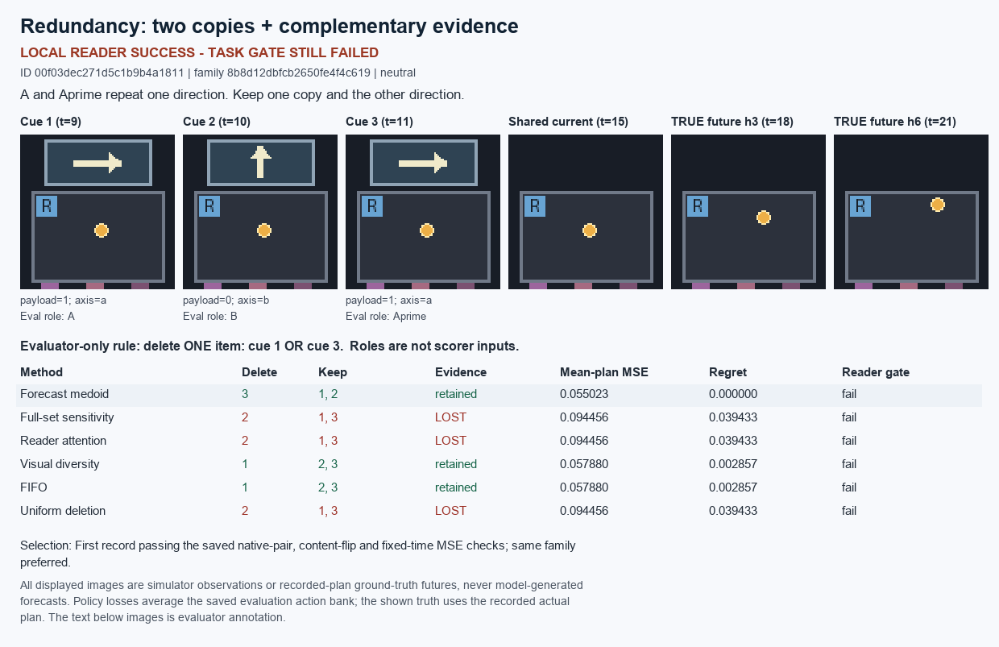
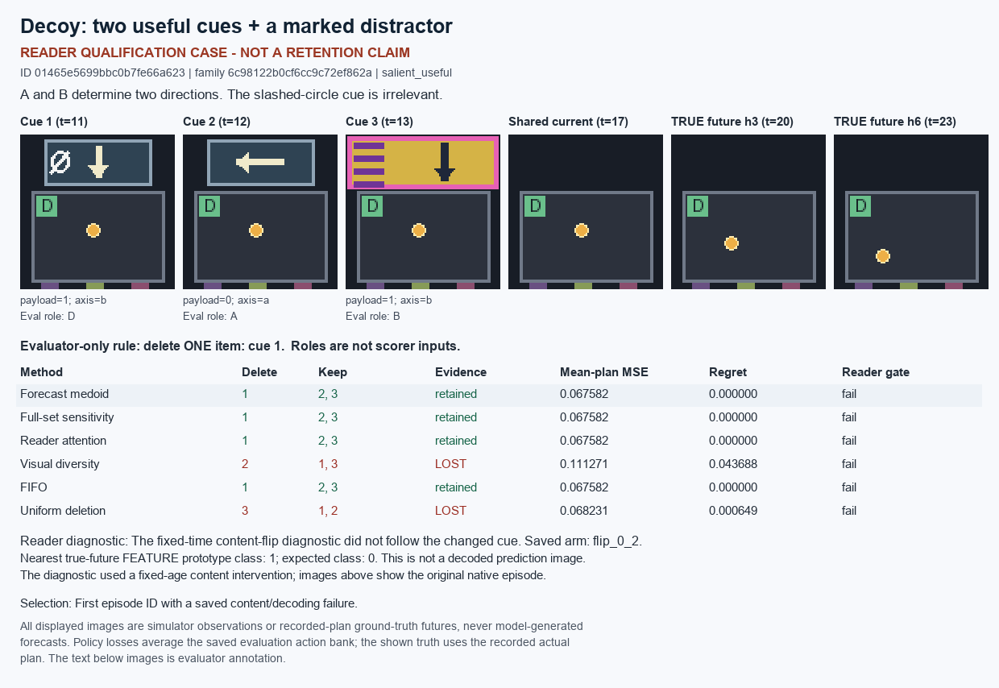
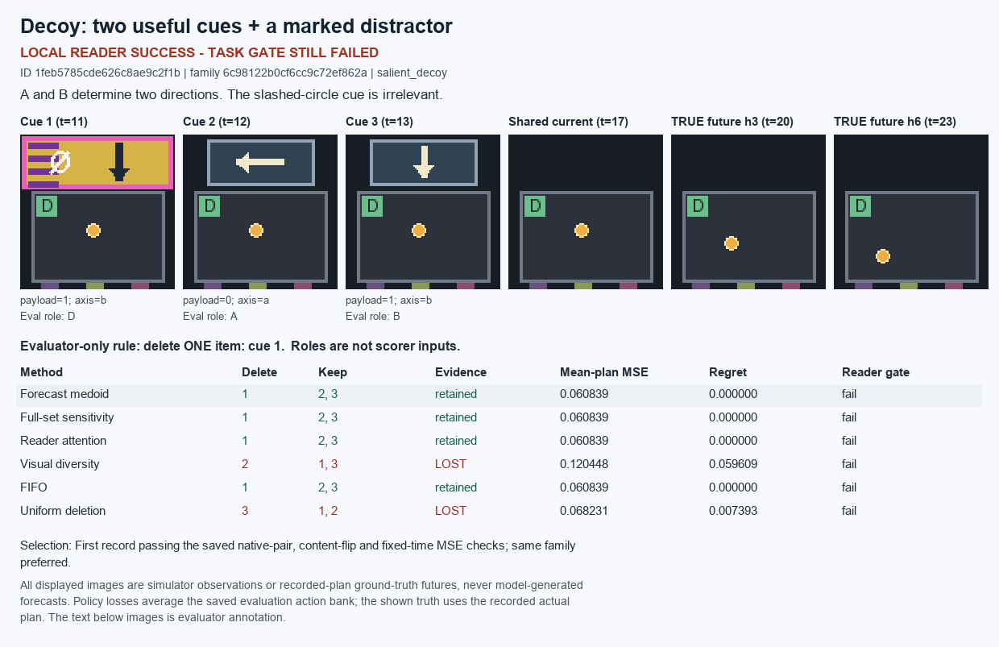
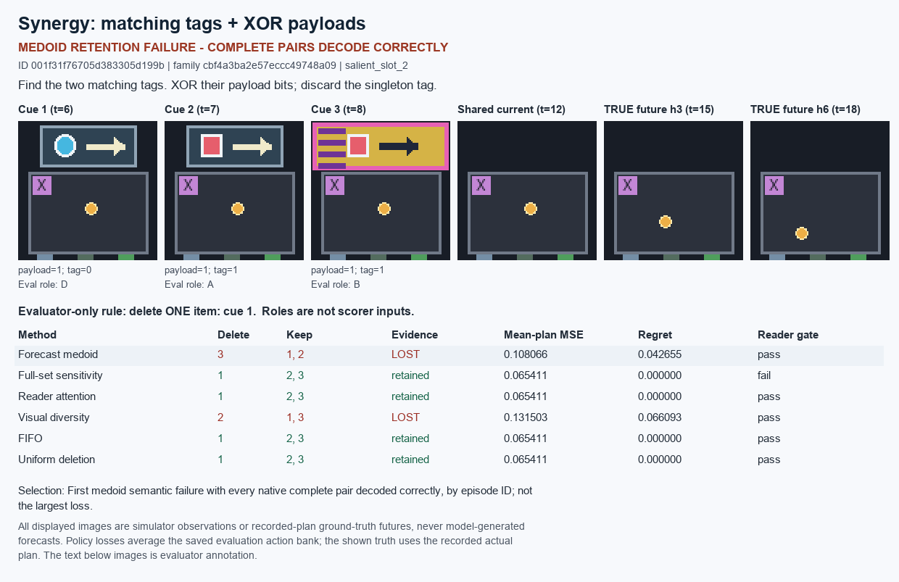
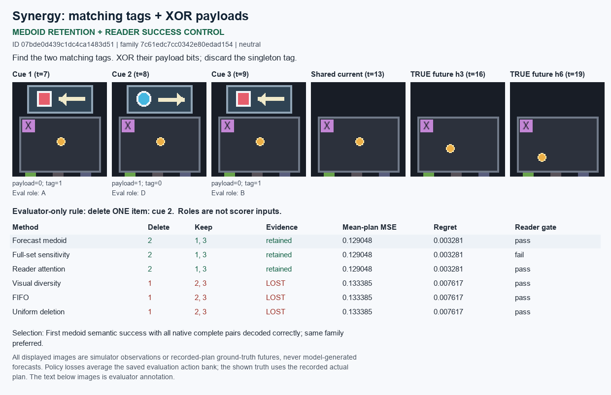

Cases are selected deterministically from saved development results. A failed reader gate is shown as a reader diagnosis, not a retention-method claim. All images show observations and ground-truth futures, not model-generated predictions. Regret is averaged over the saved evaluation action bank. These are development results, not independent confirmation.
A and Aprime repeat one direction. Keep one copy and the other direction.
reader_gate_failed | 288 episodes, 24 independent base families
READER GATE FAILED. These are reader-qualification diagnostics. The policy losses below do not establish a retention-method advantage.
| Method | Lost necessary evidence | Mean regret |
|---|---|---|
| Forecast medoid | 38/288 | 0.004303 |
| Full-set sensitivity | 85/288 | 0.005449 |
| Reader attention | 144/288 | 0.007422 |
| Visual diversity | 48/288 | 0.018364 |
| FIFO | 96/288 | 0.017670 |
| Uniform deletion | 132/288 | 0.019116 |


A and B determine two directions. The slashed-circle cue is irrelevant.
reader_gate_failed | 288 episodes, 24 independent base families
READER GATE FAILED. These are reader-qualification diagnostics. The policy losses below do not establish a retention-method advantage.
| Method | Lost necessary evidence | Mean regret |
|---|---|---|
| Forecast medoid | 38/288 | 0.001180 |
| Full-set sensitivity | 0/288 | 0.000547 |
| Reader attention | 0/288 | 0.000547 |
| Visual diversity | 252/288 | 0.055495 |
| FIFO | 192/288 | 0.030788 |
| Uniform deletion | 156/288 | 0.015910 |


Find the two matching tags. XOR their payload bits; discard the singleton tag.
medoid_failure_found | 1152 episodes, 24 independent base families
FULL-REFERENCE READER GATE FAILED. Full-set sensitivity is an unqualified diagnostic comparator for this task.
| Method | Lost necessary evidence | Mean regret |
|---|---|---|
| Forecast medoid | 1103/1152 | 0.052419 |
| Full-set sensitivity | 672/1152 | 0.026245 |
| Reader attention | 576/1152 | 0.026182 |
| Visual diversity | 1152/1152 | 0.055940 |
| FIFO | 768/1152 | 0.037737 |
| Uniform deletion | 768/1152 | 0.037548 |


Selection, all denominators and source hashes: selection.json.